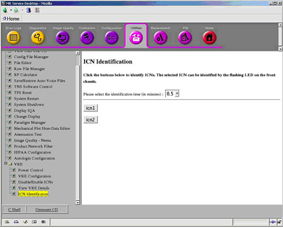
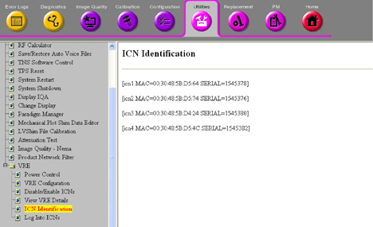

Operating Documentation
Direction 5670000, Rev# 1
Optima MR450w 1.5T Service Methods
Module Version 3.0, Version Date 5/27/09
Operating Documentation |
| Required Persons | Preliminary Reqs | Procedure | Finalization |
|---|---|---|---|
| 1 | Not Applicable | Not Applicable | Not Applicable |
Each ICN has a Host name. If there are two ICNs, one would be ICN1 and the other ICN2. This tool determines which is ICN1 and which is ICN2.
Go to Utilities => Toolbox => VRE => ICN Identification. See Illustration 1.
Illustration 1: ICN Identification for Silver SUN ICN

See Illustration 2 for systems containing a silver SUN ICN and Illustration 3 for systems containing a black Dedicated Computing ICN.
Illustration 2: ICN Identification for Silver SUN ICN
Illustration 3: ICN Identification Black Dedicated Computing ICN

The ICN selected will be identified by a flashing LED on the front chassis. Select the identification time from the drop-down menu.
| NOTE: | The default time is 30 seconds. The LED can flash up to 5 minutes. |
For the black dedicated computing ICN, only the MAC address displays, which is labeled on the back of the ICN. The silver SUN ICNs have lights that flash when the appropriate ICN is selected. Select the identification time from the drop-down menu.
| NOTE: | The default time is 30 seconds. The LED light can flash up to 5 minutes. |
Click on the ICN host name to identify the ICN.
For the silver SUN ICNs, click on the ICN host name to identify the ICN. The ICN selected will be identified by a flashing LED on the front chassis.
No finalization steps.